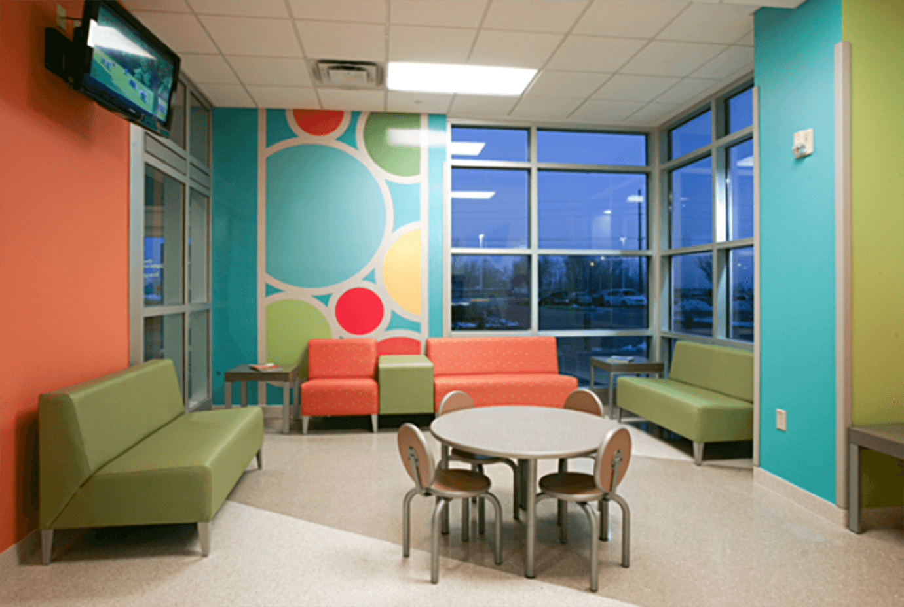
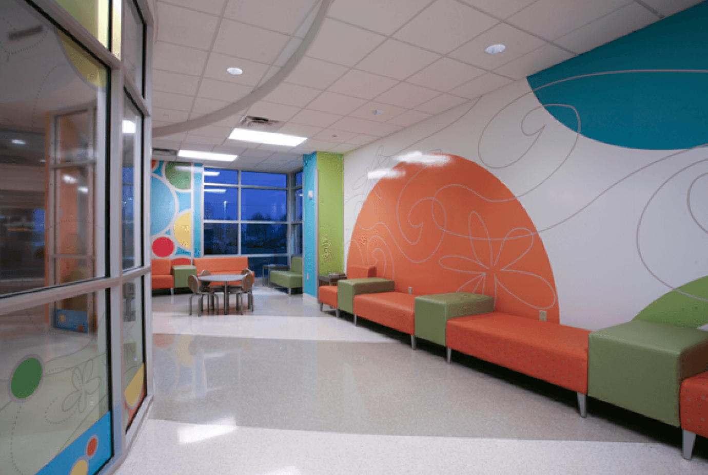
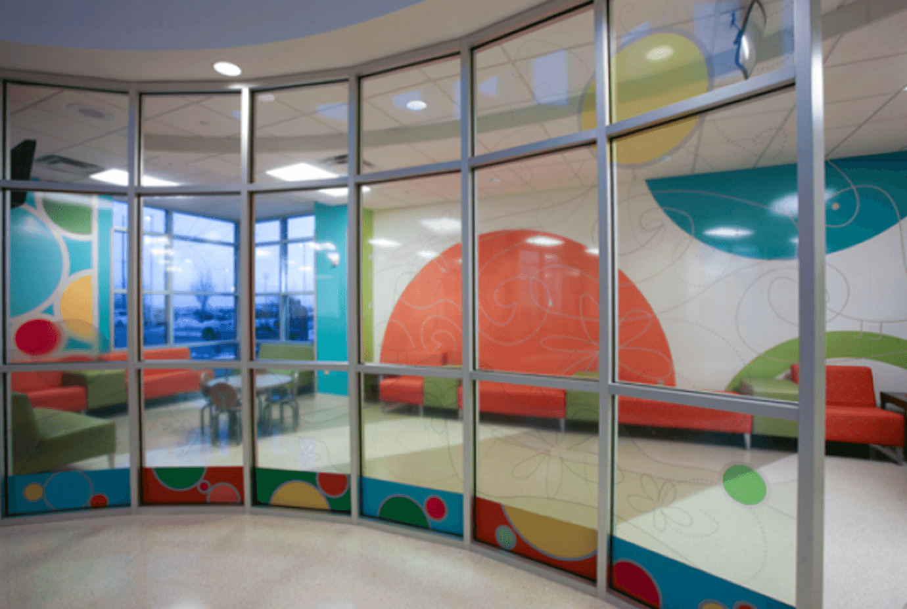

Deaconess Clinic Pediatric Urgent Care
Waiting Room Art Installation
Taking your child to the emergency room
can be an emotional experience. I was
tasked with designing a narrow
designated waiting area for children and
their families while they await care. The
space is partitioned from the existing ER
by glass. I chose playful colors and soft
round shapes that soothe and invite the
view to see more than circles.
I created continuous line forms in a soft
gray toblend with the vibrant colored shapes.
A bird, frog, butterflies and flowers can be
found by the viewer. The artwork was
commissioned by Jackson Begley Art
Consultants.


